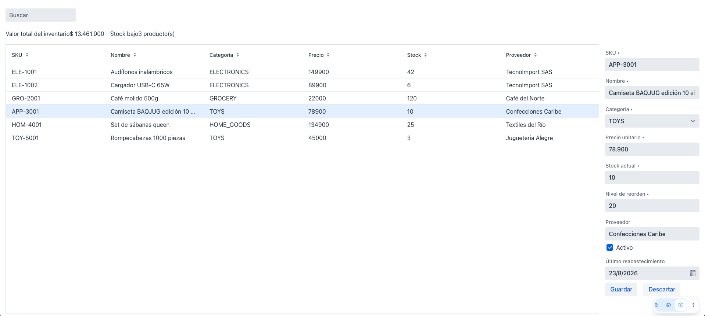

Sesión 5: Guardar, descartar, alta y baja¶
Rama: sesion-5
Lo que vas a lograr: guardar y descartar cambios de forma explícita,
crear productos nuevos desde una barra de herramientas, y eliminarlos con
un diálogo de confirmación.
Parte 1: Modo buffered: guardar y descartar¶
Ahora mismo, como usamos binder.readBean(...) (no binder.setBean(...)),
ya estamos en lo que Vaadin llama modo "buffered": los cambios que el
usuario hace en los campos no se escriben en el bean hasta que alguien lo
pida explícitamente. Si en cambio hubiéramos usado setBean, estaríamos en
modo "write-through": cada tecla se escribiría de inmediato en el
objeto, lo cual casi nunca es lo que quieres en un formulario real, porque
significa que una edición a medio hacer ya está "guardada" en memoria antes
de que el usuario decida algo.
Agregamos los botones al formulario:
private final Button saveButton = new Button("Guardar");
private final Button discardButton = new Button("Descartar");
Descartar es el más simple: volvemos a leer el bean actual, y como no le escribimos nada, los campos regresan a su último valor guardado.
peek(), no get(), dentro de un click listener
get() registra una dependencia reactiva: úsalo dentro de un
Signal.effect o un Signal.computed, donde quieres que el bloque se
vuelva a ejecutar si el signal cambia. peek() lee el valor actual
sin registrar esa dependencia. Dentro de un click listener no
quieres que este código se dispare de nuevo cada vez que cambie
selectedProduct: solo quieres su valor en el instante del clic. Por
eso todo el código dentro de listeners de botón en esta guía usa
peek().
Guardar llama a binder.writeBean(...), que intenta escribir todos los
campos al bean. Si algo no pasa validación, lanza una excepción y no
escribe nada: el propio formulario ya está mostrando los errores, así que
el catch puede quedar vacío.
private void save() {
Product product = selectedProduct.peek();
if (product == null) {
return;
}
try {
binder.writeBean(product);
grid.getDataProvider().refreshItem(product);
updateVisibleProducts(searchQuery.peek());
Notification.show("Producto guardado");
} catch (ValidationException e) {
// El formulario ya resalta los campos inválidos.
}
}
refreshItem, no solo el signal: mutar un objeto no es lo mismo que cambiar la lista
binder.writeBean(product) no crea un Product nuevo: escribe los
campos del formulario en el mismo objeto que ya estaba en products y
en visibleProducts. Y ahí está el problema: updateVisibleProducts
vuelve a filtrar y arma una lista nueva, sí, pero si la búsqueda no
cambió, esa lista nueva contiene exactamente los mismos objetos, en el
mismo orden, que la anterior, así que para el signal es "el mismo
valor" y no dispara de nuevo el efecto que pinta el grid. El grid nunca
se entera de que uno de sus objetos cambió por dentro. refreshItem(product)
resuelve esto sin pasar por el signal: le dice directamente al Grid
"esta fila específica cambió, volvé a pintarla", sin importar si la
lista completa se considera distinta o no. Agregar o eliminar productos
sí cambia el tamaño de la lista, así que ahí el signal funciona solo,
sin necesidad de refreshItem; editar un producto existente es
justamente el caso en el que no alcanza.
Edita el nombre de un producto, dale Guardar, y confirma que el grid se actualiza. Edita otro y dale Descartar: debería revertir sin guardar nada.

Parte 2: Alta de productos¶
Primero, una barra de herramientas de verdad: título, buscador, y un botón de agregar, todos en una fila.
private final Button addButton = new Button(new Icon(VaadinIcon.PLUS));
private HorizontalLayout buildToolbar() {
H3 title = new H3("Catálogo de Productos");
title.getStyle().set("flex-grow", "1");
TextField searchField = new TextField();
searchField.setPlaceholder("Buscar");
searchField.setValueChangeMode(ValueChangeMode.LAZY);
searchField.bindValue(searchQuery, searchQuery::set);
HorizontalLayout toolbar = new HorizontalLayout(title, searchField, addButton);
toolbar.setWidthFull();
toolbar.setDefaultVerticalComponentAlignment(HorizontalLayout.Alignment.CENTER);
return toolbar;
}
Reemplaza el TextField de búsqueda suelto del constructor por
add(buildToolbar());. El flex-grow: 1 en el título empuja el buscador y
el botón hacia la derecha.
Para crear un producto, la lógica es simple gracias a todo lo que ya
armamos: solo hay que poner un Product nuevo, vacío, como el producto
seleccionado. El formulario se abre solo, porque su visibilidad ya está
enlazada a "hay alguien seleccionado" (Sesión 4), y el Binder lo va a leer,
porque también ya está enlazado a la selección.
grid.deselectAll() antes de crear
Como conectamos la selección con addSelectionListener (una vía: grid
→ signal), poner el signal a mano no cambia lo que el grid muestra
como seleccionado. deselectAll() evita que quede una fila vieja
resaltada mientras el formulario muestra un producto nuevo.
Un producto nuevo se distingue de uno existente por una sola cosa: todavía no tiene id.
private boolean isNewProduct(Product product) {
return product != null && product.getId() == null;
}
Vamos a usar esa condición para que el botón Guardar diga "Crear" en vez de
"Guardar" cuando corresponda, con el mismo patrón de bindText +
map que ya usamos para los KPIs en la Sesión 3:
Cambia la declaración de saveButton para que no tenga texto fijo
(new Button()), ya que ahora lo controla el bindText.
Y ajusta save() para que, si el producto es nuevo, le asigne un id y lo
agregue a la lista en memoria:
private long nextProductId = 100L;
private void save() {
Product product = selectedProduct.peek();
if (product == null) {
return;
}
boolean wasNew = isNewProduct(product);
try {
binder.writeBean(product);
if (wasNew) {
product.setId(nextProductId++);
products.add(product);
} else {
grid.getDataProvider().refreshItem(product);
}
updateVisibleProducts(searchQuery.peek());
Notification.show("Producto guardado");
} catch (ValidationException e) {
// ...
}
}
Esta asignación manual de id es temporal
En la Sesión 6, cuando conectemos una base de datos real, el id lo va a
generar la base automáticamente, y esta línea (nextProductId++) va a
desaparecer. Por ahora, mientras trabajamos en memoria, alguien tiene
que hacer ese trabajo.
Haz clic en el botón +, llena el formulario, y guarda. El botón debería decir "Crear" mientras el producto es nuevo.

Parte 3: Baja con diálogo de confirmación¶
Para borrar, lo último que queremos es que un clic accidental elimine algo
sin preguntar. Vaadin trae un componente hecho exactamente para esto:
ConfirmDialog.
Agrégalo al mismo HorizontalLayout de botones del formulario:
private void confirmDelete() {
Product product = selectedProduct.peek();
if (product == null) {
return;
}
ConfirmDialog dialog = new ConfirmDialog();
dialog.setHeader("Eliminar producto");
dialog.setText("¿Seguro que quieres eliminar \"" + product.getName() + "\"? Esta acción no se puede deshacer.");
dialog.setCancelable(true);
dialog.setConfirmText("Eliminar");
dialog.setConfirmButtonTheme("error primary");
dialog.addConfirmListener(event -> {
products.remove(product);
grid.deselectAll();
selectedProduct.set(null);
updateVisibleProducts(searchQuery.peek());
Notification.show("Producto eliminado");
});
dialog.open();
}
Vaadin al paso: ConfirmDialog
setHeader/setText arman el contenido; setCancelable(true) agrega
un botón de cancelar además del de confirmar; setConfirmText(...)
cambia la etiqueta del botón de confirmación; setConfirmButtonTheme
le aplica variantes de tema (lo vas a ver de nuevo en la Sesión 8).
addConfirmListener corre solo si el usuario efectivamente confirma:
cancelar simplemente cierra el diálogo sin ejecutar nada.
Por último, no tiene sentido mostrar el botón Eliminar mientras estás
creando un producto que ni siquiera existe todavía en ningún lado. Lo
deshabilitamos reutilizando isNewProduct:
Prueba: haz clic en + y confirma que Eliminar aparece deshabilitado; haz clic en una fila existente y confirma que se habilita. Elimina un producto y verifica el diálogo.

Cierre de la sesión¶
git add .
git commit -m "sesion-5: guardar, descartar, alta y baja con confirmación"
git branch sesion-5
En la Sesión 6 reemplazamos la lista en memoria por una base de datos real con Spring Data JPA.